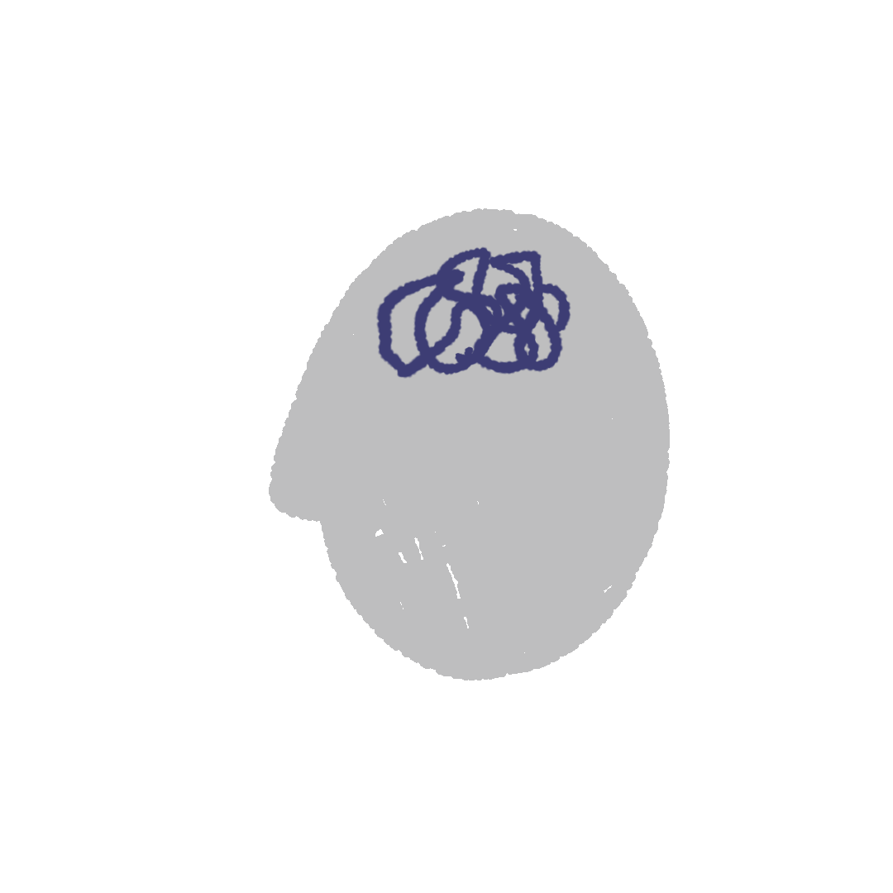

SEBI U BRADU
Stiže autobus krcat putnicima. Samo da mi ne umakne, srećom ima još jedno mesto za mene. Jedan od putnika ima nesrazmerno dug vrat pa ćurliče nosi mek filcani šešir s nekom vrstom kanapčića umesto trake uh što je naduven i odjednom počinje gle šta mu bi, malopre je bio zdrav da grdi svog suseda a drugi ga ne zarezuje ni za suvu šljivu kome prebacuje da ga namerno gazi laf se duva, ali će brzo da se oladi po nogama. No kako je jedno mesto bilo slobodno, on se pokupi šta sam rekao a i potrča da ga zauzme. Posle jedno dva sata otprilike kako su čudne slučanosti on je bio na Kur de Romu u društvu nekog svog prijatelja zevzek kao i on koji mu je pokazivao kažiprstom na jedno dugme na kaputu šta li on može da mu kaže pametno?
